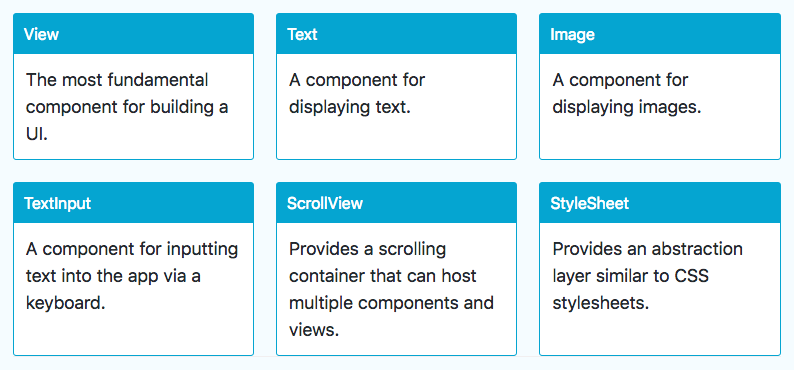
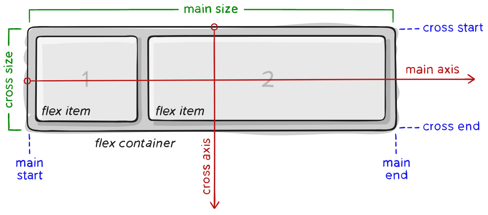

Création d'applications mobiles avec React Native
Sommaire
- Les composants
- Navigation entre vues
- Gestion de l’état
- Interaction avec Firebase
Les composants
La notion de composant
Les composants sont les blocs de base d’une application React (Native).
Ils permettent de créer une UI sous forme déclarative par assemblage de composants.
Propriétés d’un composant
- Caractéristiques définies au moment de la création.
- Modifiables uniquement par le composant parent.
import React, { Component } from 'react';
import { Text, View } from 'react-native';
class Greeting extends Component {
render() {
return <Text>Hello {this.props.name}!</Text>;
}
}
export default class LotsOfGreetings extends Component {
render() {
return (
<View style={{ alignItems: "center" }}>
<Greeting name="John" />
<Greeting name="Paul" />
<Greeting name="Jones" />
</View>
);
}
}
Etat d’un composant
- Etat interne (données) d’un composant, susceptible de changer au cours du temps (mutable).
- Modifié uniquement via
setState().
import React, { Component } from 'react';
import { StyleSheet, Text, View } from 'react-native';
class Counter extends Component {
constructor(props) {
super(props);
this.state = { count: 0 };
setInterval(() => {
this.setState({ count: this.state.count + 1 });
}, 1000);
}
render() {
const { count } = this.state;
const { color, size } = this.props;
return <Text style={{ color, fontSize: size }}>{count}</Text>;
}
}
export default class CounterApp extends Component {
render() {
return (
<View style={styles.container}>
<Counter color={"red"} size={30} />
</View>
);
}
}
const styles = StyleSheet.create({
container: {
flex: 1,
backgroundColor: "#fff",
alignItems: "center",
justifyContent: "center"
}
});
Composants de base

Composants d’interface utilisateur

JSX
Syntaxe introduite pour le framework web React
const a = <View />
const b = (
<View
foo='hello'
bar={baz}>
<Text>42</Text>
</View>
)
var a = React.createElement(View, null);
var b = React.createElement(
View,
{
foo: "hello",
bar: baz
},
React.createElement(Text, null, "42")
);
Gestion du style
- Défini via la propriété
stylepour les composants de base. - Semblable à CSS avec nommage camelCase.
import React, { Component } from 'react';
import { StyleSheet, Text, View } from 'react-native';
const styles = StyleSheet.create({
bigblue: {
color: 'blue',
fontWeight: 'bold',
fontSize: 30,
},
red: {
color: 'red',
},
});
export default class LotsOfStyles extends Component {
render() {
return (
<View>
<Text style={styles.red}>just red</Text>
<Text style={styles.bigblue}>just bigblue</Text>
<Text style={[styles.bigblue, styles.red]}>bigblue, then red</Text>
<Text style={[styles.red, styles.bigblue]}>red, then bigblue</Text>
</View>
);
}
}
Gestion des dimensions
Deux possibilités :
- Dimensions fixes
- Dimensions flexibles
Dimensions fixes
Utile pour les composants qui doivent toujours être affichés à la même taille.
import React, { Component } from 'react';
import { View } from 'react-native';
export default class FixedDimensionsBasics extends Component {
render() {
return (
<View>
<View style={{width: 50, height: 50, backgroundColor: 'powderblue'}} />
<View style={{width: 100, height: 100, backgroundColor: 'skyblue'}} />
<View style={{width: 150, height: 150, backgroundColor: 'steelblue'}} />
</View>
);
}
}
Dimensions flexibles
- Les dimensions s’adaptent à l’espace disponible
flex:1=> espace partagé équitablement entre tous les composants d’un même parent
import React, { Component } from 'react';
import { View } from 'react-native';
export default class FlexDimensionsBasics extends Component {
render() {
return (
// Try removing the `flex: 1` on the parent View.
// The parent will not have dimensions, so the children can't expand.
// What if you add `height: 300` instead of `flex: 1`?
<View style={{flex: 1}}>
<View style={{flex: 1, backgroundColor: 'powderblue'}} />
<View style={{flex: 2, backgroundColor: 'skyblue'}} />
<View style={{flex: 3, backgroundColor: 'steelblue'}} />
</View>
);
}
}
Flexbox
- Mode de mise en page pour les éléments situés à l’intérieur d’un conteneur.
- Objectif : répartir au mieux l’espace disponible.

Flex Direction
Définit la direction du flux d’éléments dans le conteneur

Justify Content

Align Items

Gestion du positionnement
Flex direction par défaut : column.
import React, { Component } from 'react';
import { View } from 'react-native';
export default class FlexDirectionBasics extends Component {
render() {
return (
// Try setting `flexDirection` to `column`.
<View style={{flex: 1, flexDirection: 'row'}}>
<View style={{width: 50, height: 50, backgroundColor: 'powderblue'}} />
<View style={{width: 50, height: 50, backgroundColor: 'skyblue'}} />
<View style={{width: 50, height: 50, backgroundColor: 'steelblue'}} />
</View>
);
}
}
justifyContent
Gère la répartition sur l’axe principal (main axis).
import React, { Component } from 'react';
import { View } from 'react-native';
export default class JustifyContentBasics extends Component {
render() {
return (
// Try setting `justifyContent` to `center`.
// Try setting `flexDirection` to `row`.
<View style={{
flex: 1,
flexDirection: 'column',
justifyContent: 'space-between',
}}>
<View style={{width: 50, height: 50, backgroundColor: 'powderblue'}} />
<View style={{width: 50, height: 50, backgroundColor: 'skyblue'}} />
<View style={{width: 50, height: 50, backgroundColor: 'steelblue'}} />
</View>
);
}
}
alignItems
Gère la répartition sur l’axe secondaire (cross axis).
import React, { Component } from 'react';
import { View } from 'react-native';
export default class AlignItemsBasics extends Component {
render() {
return (
// Try setting `alignItems` to 'flex-start'
// Try setting `justifyContent` to `flex-end`.
// Try setting `flexDirection` to `row`.
<View style={{
flex: 1,
flexDirection: 'column',
justifyContent: 'center',
alignItems: 'stretch',
}}>
<View style={{width: 50, height: 50, backgroundColor: 'powderblue'}} />
<View style={{height: 50, backgroundColor: 'skyblue'}} />
<View style={{height: 100, backgroundColor: 'steelblue'}} />
</View>
);
}
}
Gestion du défilement
ScrollView : utile pour un petit nombre (< 30) de composants, tous rendus même si non affichés.
import React, { Component } from 'react';
import { ScrollView, Image, Text } from 'react-native';
export default class IScrolledDown extends Component {
render() {
return (
<ScrollView>
<Text style={{fontSize:48}}>Scroll me plz</Text>
<Image source={{uri: "https://facebook.github.io/react-native/img/favicon.png", width: 64, height: 64}} />
<Image source={{uri: "https://facebook.github.io/react-native/img/favicon.png", width: 64, height: 64}} />
<Image source={{uri: "https://facebook.github.io/react-native/img/favicon.png", width: 64, height: 64}} />
<Text style={{fontSize:48}}>If you like</Text>
<Image source={{uri: "https://facebook.github.io/react-native/img/favicon.png", width: 64, height: 64}} />
<Image source={{uri: "https://facebook.github.io/react-native/img/favicon.png", width: 64, height: 64}} />
<Image source={{uri: "https://facebook.github.io/react-native/img/favicon.png", width: 64, height: 64}} />
</ScrollView>
);
}
}
Listes
- Composants rendus au moment de leur affichage
FlatList: pour des éléments de même structureSectionList: pour des élements hiérarchisés
import React, { Component } from 'react';
import { SectionList, StyleSheet, Text, View } from 'react-native';
export default class SectionListBasics extends Component {
render() {
return (
<View style={styles.container}>
<SectionList
sections={[
{title: 'D', data: ['Devin']},
{title: 'J', data: ['Jackson', 'James', 'Jillian', 'Jimmy', 'Joel', 'John', 'Julie']},
]}
renderItem={({item}) => <Text style={styles.item}>{item}</Text>}
renderSectionHeader={({section}) => <Text style={styles.sectionHeader}>{section.title}</Text>}
keyExtractor={(item, index) => index}
/>
</View>
);
}
}
const styles = StyleSheet.create({
container: {
flex: 1,
paddingTop: 22
},
sectionHeader: {
paddingTop: 2,
paddingLeft: 10,
paddingRight: 10,
paddingBottom: 2,
fontSize: 14,
fontWeight: 'bold',
backgroundColor: 'rgba(247,247,247,1.0)',
},
item: {
padding: 10,
fontSize: 18,
height: 44,
},
})
Navigation entre vues
React Navigation
- Composant issu de la communauté
- Standard pour les applications multi-vues
# Adding react-navigation to the project
npm install --save react-navigation
StackNavigator
Gestion d’une pile de vues
const RootStack = createStackNavigator(
{
Home: HomeScreen,
Details: DetailsScreen
},
{
initialRouteName: "Home"
}
);
TabNavigator
Gestion d’une barre d’onglets en haut ou en bas de l’application
const TabNavigator = createBottomTabNavigator({
Home: HomeScreen,
Settings: SettingsScreen
});
DrawerNavigator
Gestion d’un menu “hamburger”
const MyDrawerNavigator = createDrawerNavigator({
Home: {
screen: MyHomeScreen,
},
Notifications: {
screen: MyNotificationsScreen,
},
});
Gestion de l’état
Définition
Etat (state) = ensemble des données susceptibles d’être modifiées pendant l’exécution de l’application.
Chaque composant React Native possède un état interne, géré avec this.state et this.setState().
Problématique 1
La gestion locale de l’état devient insuffisante lorsqu’un composant doit accéder à ou modifier l’état d’un autre composant.
Nécessité de partager l’état de certains composants.
Solution
- Remonter l’état au niveau du plus proche composant parent commun.
- Définir les actions de modification dans ce composant.
- Distribuer état et actions aux composants enfants via des props (”The data flows down”).
Problématique 2
Les composants parents rassemblent trop de choses :
- Etat commun
- Actions de modification
- Hiérarchie des composants enfants
Non-respect du principe de séparation des responsabilités.
Solution
- Centraliser l’état et les actions de modifications dans des objets dédiés, souvent appelés stores.
- Donner accès à ces objets aux composants via des props.
- Prévoir un mécanisme d’abonnement des composants aux mutations de l’état dans les stores.
Problématique 3
- Le nombre croissant de composants complique les évolutions de l’état.
- Les mutations de l’état peuvent déclencher un (trop) grand nombre de rendus des composants.
Solution
- Utiliser une librairie dédiée à la gestion de l’état.
- Meilleur choix pour la plupart des projets : MobX.
# Add MobX to a React (Native) project
npm i -s mobx mobx-react
npm i --save-dev babel-preset-mobx

Définition d’un objet du domaine
import { observable } from "mobx";
export default class Todo {
@observable task;
@observable completed;
constructor(task = "", completed = false) {
this.task = task;
this.completed = completed;
}
// ...
}
Définition d’un store
import { observable } from "mobx";
import Todo from "../domain/Todo";
export default class TodoStore {
@observable todos;
constructor() {
this.todos = [
new Todo("Payer les factures", true), // ...
];
}
addTodo(task) {
const todo = new Todo(task);
this.todos = [todo, ...this.todos];
}
// ...
}
Lien entre store et composant
const App = () => {
const todoStore = new TodoStore();
return <MainView todoStore={todoStore} />;
};
Abonnement d’un composant
import { observer } from "mobx-react/native";
@observer
export default class MainView extends React.Component {
constructor(props) {
super(props);
this.onAddTodo = task => {
this.props.todoStore.addTodo(task);
};
// ...
}
// ...
}
Pourquoi pas Redux ?
- Librairie créée pour adresser des problématiques à l’échelle de Facebook
- Complexe et overkill pour les projets “normaux”
- “You might not need Redux” (écrit par son créateur)
Interaction avec Firebase
- Base de données NoSQL avec capacités temps réel
- Analytics, A/B testing, etc
- Gratuite pour les usages modérés
- Souvent utilisée comme back-end pour les applications mobiles
NoSQL = Not Only SQL
- Famille de SGBD non relationnels
- Structure hiérarchique ou champ/valeur
- Bien adapté à certains usages

Initialisation de la connexion
import * as firebase from 'firebase';
// Initialize Firebase
const firebaseConfig = {
apiKey: "<YOUR-API-KEY>",
authDomain: "<YOUR-AUTH-DOMAIN>",
databaseURL: "<YOUR-DATABASE-URL>",
storageBucket: "<YOUR-STORAGE-BUCKET>"
};
firebase.initializeApp(firebaseConfig);
Structure des données
Les données sont stockées sous la forme d’un unique arbre JSON.
{
"users": {
"alovelace": {
"name": "Ada Lovelace",
"contacts": { "ghopper": true },
},
"ghopper": { ... },
"eclarke": { ... }
}
}
Profondeur de l’arbre
Arborescence trop profonde => itérations complexes et coûteuses
{
// This is a poorly nested data architecture, because iterating the children
// of the "chats" node to get a list of conversation titles requires
// potentially downloading hundreds of megabytes of messages
"chats": {
"one": {
"title": "Historical Tech Pioneers",
"messages": {
"m1": { "sender": "ghopper", "message": "Relay malfunction found. Cause: moth." },
"m2": { ... },
// a very long list of messages
}
},
"two": { ... }
}
}
Meilleure pratique : dénormalisation
{
// Chats contains only meta info about each conversation
// stored under the chats's unique ID
"chats": {
"one": {
"title": "Historical Tech Pioneers",
"lastMessage": "ghopper: Relay malfunction found. Cause: moth.",
"timestamp": 1459361875666
},
"two": { ... },
"three": { ... }
},
// Conversation members are easily accessible
// and stored by chat conversation ID
"members": {
// we'll talk about indices like this below
"one": {
"ghopper": true,
"alovelace": true,
"eclarke": true
},
"two": { ... },
"three": { ... }
},
// Messages are separate from data we may want to iterate quickly
// but still easily paginated and queried, and organized by chat
// conversation ID
"messages": {
"one": {
"m1": {
"name": "eclarke",
"message": "The relay seems to be malfunctioning.",
"timestamp": 1459361875337
},
"m2": { ... },
"m3": { ... }
},
"two": { ... },
"three": { ... }
}
}
Création d’index
Facilite les requêtes sur une partie limitée des données
// An index to track Ada's memberships
{
"users": {
"alovelace": {
"name": "Ada Lovelace",
// Index Ada's groups in her profile
"groups": {
// the value here doesn't matter, just that the key exists
"techpioneers": true,
"womentechmakers": true
}
},
...
},
"groups": {
"techpioneers": {
"name": "Historical Tech Pioneers",
"members": {
"alovelace": true,
"ghopper": true,
"eclarke": true
}
},
...
}
}
Lecture et écriture de données
const ref = firebase.database().ref('path/into/hierarchy');
const obj = { someAttribute: true };
// Append a new child into hierarchy
// newRef.key contains the unique autogenerated key
const newRef = ref.push(obj);
// Overwrites the path
ref.set(obj);
// Updates only the specified attributes
ref.update(obj);
Abonnement aux changements distants
https://firebase.google.com/docs/database/web/lists-of-data
ref.on("value", data => {
// data.key contains the autogenerated key
// data.val() contains the data fields
});
Annexe : ESLint
Installation
# Install required packages globally
npm i -g eslint eslint-config-prettier eslint-plugin-react eslint-plugin-react-native babel-eslint
Paramétrage de VS Code
"javascript.implicitProjectConfig.experimentalDecorators": true